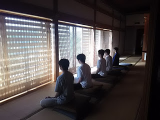
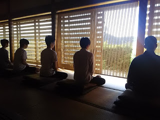
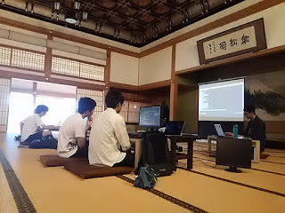
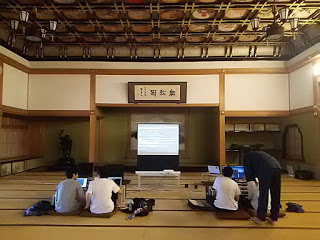

ZENIT ARCHIVE
ZenIT Workshop - For Programmers
Oct 9, 2018
Today, we did a more advanced ZenIT workshop with some younger, experienced programmers!
As usual, we did Zazen meditation, this time facing the windows outside! Keeping our focus and well being intact was very important.
For the actual programming part, we had everyone experience using Docker to run Linux containers, playing with Google Test and simple C++ programs, built with TDD!
After this, we broke into pairs, working on creative C++ with TDD projects, with me coming in 3 times to shuffle the pairs! This was necessary to prove to everyone the power of pairing, which is resistance to team rotations, fun, and creative.
It was super fun!
Recent Posts
See All
2019/12/15 ZenIT Workshop @ Tenryuuji - Blog Post
2019/04/14 ZenIT Workshop @ Eiheiji - Blog Post
University of Fukui Students Learn About the Silicon Valley and ZenIT




